🛍️ 買い物メモの作り方
🛍️ How to make a shopping memo
🛍️ 쇼핑 메모 만드는 법
🛍️ 购物备忘的制作方法
🛍️ 購物備忘的製作方法
アプリの「買い物メモの作り方」と同じです。動く画面を見てください。指のマークが、押す場所を教えます。
This is the same as "How to make a shopping memo" inside the app. Watch the moving screens: the finger mark shows where to press.
앱 안의 "쇼핑 메모 만드는 법"과 같습니다. 움직이는 화면을 보세요. 손가락 표시가 누를 곳을 알려 줍니다.
与应用内的“购物备忘的制作方法”相同。请看动态画面，手指标记会告诉您按哪里。
與應用程式內的「購物備忘的製作方法」相同。請看動態畫面，手指標記會告訴您按哪裡。
- 「📝買い物メモ作成」を押す買い物のホームの、紫色のボタンです。Press "Create Shopping Memo"It is the purple button on the Shopping home screen."쇼핑 메모 작성"을 누릅니다쇼핑 홈 화면의 보라색 버튼입니다.点击“创建购物备忘”购物主页上的紫色按钮。點選「建立購物備忘」購物主頁上的紫色按鈕。
- お店を選ぶ行くお店の名前を押します。決めないときは「店舗なし（全店舗まとめ）」を押します。Choose a storePress the name of the store you are going to. If you have not decided, press "Without stores (all stores combined)".매장을 고릅니다갈 매장의 이름을 누릅니다. 정하지 않았다면 "매장 없음 (전체 매장 합침)"을 누릅니다.选择店铺点击要去的店铺名称。还没决定时，点击“不分店铺（全部店铺合并）”。選擇店家點選要去的店家名稱。還沒決定時，點選「不分店家（全部店家合併）」。
- 買う物に☑を付ける買いたい品物に☑を付けます。付けた数は、上の「選択 ○件」で分かります。Tick what you want to buyTick the items you want to buy. The number you ticked is shown at the top.살 물건에 ☑를 합니다사고 싶은 품목에 ☑를 합니다. 고른 수는 위쪽에 표시됩니다.给要买的东西打☑给想买的物品打☑。已选数量显示在上方。給要買的東西打☑給想買的物品打☑。已選數量顯示在上方。
- 「OK」を押して完成右下の「OK」で、買い物メモができます。お店では、この画面を見て買い物します。買った物は、品名の左の☑を押すと、線で消せます。Press "OK" — donePress "OK" at the bottom right and your shopping memo is ready. Look at this screen in the store. Tap the ☑ to the left of an item to strike it out once bought."확인"을 누르면 완성오른쪽 아래의 "확인"을 누르면 쇼핑 메모가 완성됩니다. 매장에서는 이 화면을 보며 쇼핑합니다. 산 물건은 품명 왼쪽의 ☑를 눌러 선으로 지웁니다.点击“确定”即完成点击右下角的“确定”，购物备忘就做好了。在店里看着这个画面购物。买好的东西，点击品名左边的☑即可划线删去。點選「確定」即完成點選右下角的「確定」，購物備忘就做好了。在店裡看著這個畫面購物。買好的東西，點選品名左邊的☑即可劃線刪去。
おまけ：追加メモ
Bonus: Extra memo
덤: 추가 메모
附加：额外备注
附加：額外備註
品物の一覧にないものは、「追加メモ」に書き足せます。書いて「OK」を押すと、買い物メモに載ります。
Anything that is not in your item list can be written in the "Additional memo". Press "OK" and it appears on the shopping memo.
품목 목록에 없는 것은 "추가 메모"에 적어 넣을 수 있습니다. 적고 "확인"을 누르면 쇼핑 메모에 올라갑니다.
清单里没有的东西，可以写在“附加备注”里。写好后点击“确定”，就会出现在购物备忘上。
清單裡沒有的東西，可以寫在「附加備註」裡。寫好後點選「確定」，就會出現在購物備忘上。
先にしておくこと（はじめの1回だけ）よく行くお店の名前を登録します。アプリを始めたとき、案内が出ます。写真は要りません。品物は、「写真なしで登録」でも、📷カメラ・🖼️ギャラリーでも登録できます。
Before you start (only the first time)Register the names of the stores you often visit. A guide appears when you first start the app, and no photos are needed. Items can be registered with "Add without photo", or with 📷 Camera / 🖼️ Gallery.
먼저 해 둘 것(처음 한 번만)자주 가는 매장의 이름을 등록합니다. 앱을 처음 시작하면 안내가 나옵니다. 사진은 필요 없습니다. 품목은 "사진 없이 등록"으로도, 📷카메라·🖼️갤러리로도 등록할 수 있습니다.
事先要做的事（只需第一次）登记常去的店铺名称。刚开始使用应用时会出现指引，不需要照片。物品可以用“无照片登记”，也可以用📷拍照・🖼️相册登记。
事先要做的事（只需第一次）登錄常去的店家名稱。剛開始使用應用程式時會出現指引，不需要照片。物品可以用「不附照片登錄」，也可以用📷拍照・🖼️相簿登錄。
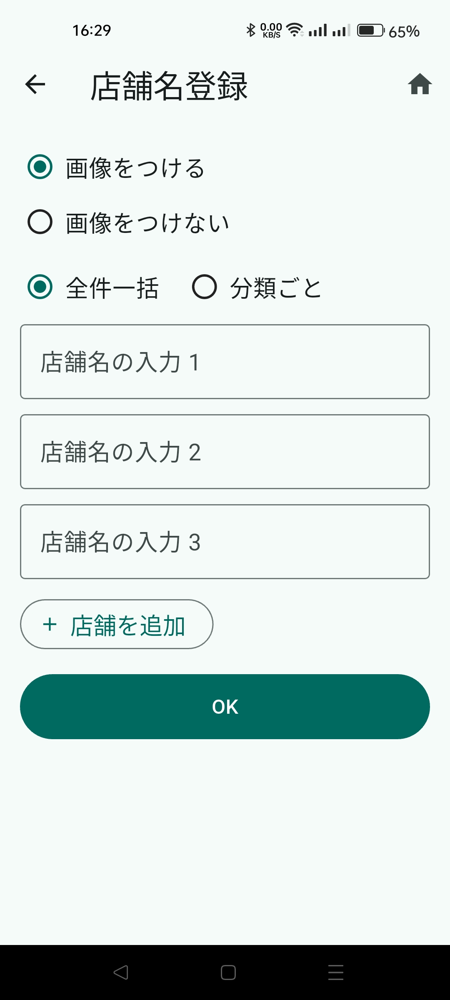

💴 価格の記録
💴 Recording prices
💴 가격 기록
💴 价格记录
💴 價格記錄
値段を残しておくと、次の買い物で「前はいくらだった？」がすぐ分かります。記録のしかたは2つです。記録した値段は、「過去の価格を見る」で見られます。
If you keep the prices, you can see at once "how much was it last time?" on your next shopping trip. There are two ways to record them, and you can look at the recorded prices with "View past prices".
가격을 남겨 두면 다음 쇼핑 때 "지난번엔 얼마였지?"를 바로 알 수 있습니다. 기록하는 방법은 두 가지이며, 기록한 가격은 "과거 가격 보기"에서 볼 수 있습니다.
把价格记下来，下次购物时马上就知道“上次多少钱？”。记录方法有两种，记下的价格可以在“查看过去的价格”中查看。
把價格記下來，下次購物時馬上就知道「上次多少錢？」。記錄方法有兩種，記下的價格可以在「查看過去的價格」中查看。
① 買い物のとき、その場で記録する
① Record it on the spot while shopping
① 쇼핑할 때 그 자리에서 기록하기
① 购物时当场记录
① 購物時當場記錄
- 買い物メモの上の「買ったとき値段を記録する」をオンにします。
- Turn on "Record the price when I buy" at the top of the shopping memo.
- 쇼핑 메모 위의 "구매할 때 가격 기록"을 켭니다.
- 打开购物备忘上方的“购买时记录价格”。
- 開啟購物備忘上方的「購買時記錄價格」。
- 品物に☑を付けるとき、値段を入れる画面が出ます。値段を入れて「記録して☑」を押します。（記録しないときは「記録しないで☑」）
- When you tick an item, a screen to enter the price appears. Enter the price and press "Record and tick". (To skip it, press "Tick without recording".)
- 품목에 ☑를 할 때 가격을 입력하는 화면이 나옵니다. 가격을 입력하고 "기록하고 ☑"를 누릅니다. (기록하지 않으려면 "기록하지 않고 ☑")
- 给物品打☑时会出现输入价格的画面。输入价格后点击“记录并勾选”。（不记录时点击“不记录，只勾选”）
- 給物品打☑時會出現輸入價格的畫面。輸入價格後點選「記錄並勾選」。（不記錄時點選「不記錄，只勾選」）
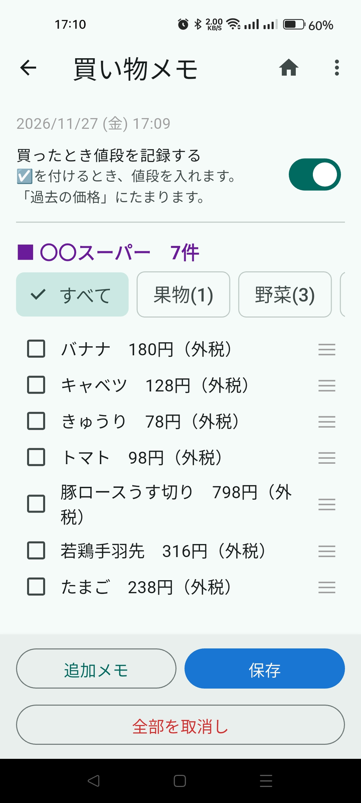
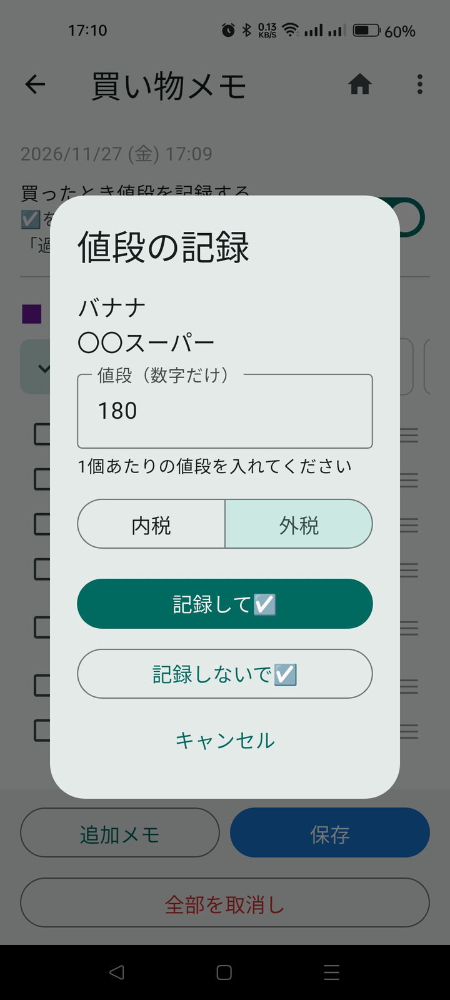
② レシートから記録する
② Record from a receipt
② 영수증으로 기록하기
② 从收据记录
② 從收據記錄
- 家計簿タブの「レシート登録」で、レシートを撮ります。AIが店名・品名・金額を読み取ります。手入力もできます。
- In the Budget tab, use "Register Receipt" to take a photo of the receipt. The AI reads the store, items and amounts. You can also type them in.
- 가계부 탭의 "영수증 등록"에서 영수증을 촬영합니다. AI가 가게 이름·품명·금액을 읽습니다. 직접 입력할 수도 있습니다.
- 在记账标签页的“登记收据”中拍摄收据。AI会读取店名、品名和金额，也可以手动输入。
- 在記帳分頁的「登錄收據」中拍攝收據。AI會讀取店名、品名和金額，也可以手動輸入。
- AIで読み取るには、はじめに「APIキー」を設定します。→ APIキーの取り方を、動く画面で見る
- To read with AI, first set up an "API key". → See how to get an API key, on moving screens
- AI로 읽으려면 먼저 "API 키"를 설정합니다. → API 키 받는 방법을 움직이는 화면으로 보기
- 要用AI读取，请先设置“API密钥”。→ 用动态画面查看获取API密钥的方法
- 要用AI讀取，請先設定「API金鑰」。→ 用動態畫面查看取得API金鑰的方法
- 登録のあと「買い物リストの価格を更新しますか？」と出たら「はい」を押します。買い物リストの値段が、レシートの値段に変わります。
- After registering, if you are asked whether to update the shopping list prices, press "Yes". The prices in your shopping list change to the receipt prices.
- 등록한 뒤 쇼핑 목록의 가격을 업데이트할지 물으면 "예"를 누릅니다. 쇼핑 목록의 가격이 영수증의 가격으로 바뀝니다.
- 登记之后，如果询问是否更新购物清单的价格，请点击“是”。购物清单中的价格就会变成收据上的价格。
- 登錄之後，如果詢問是否更新購物清單的價格，請點選「是」。購物清單中的價格就會變成收據上的價格。
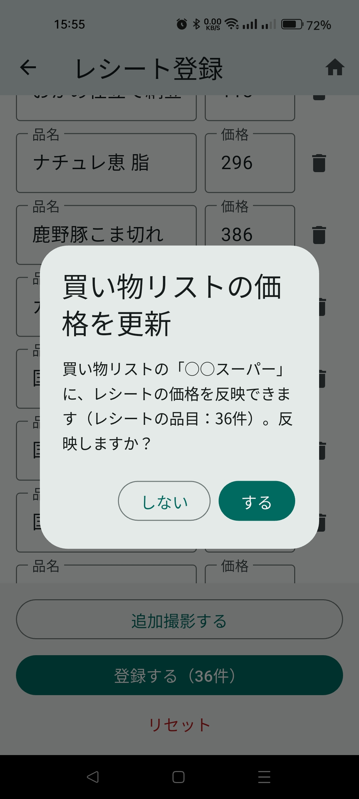
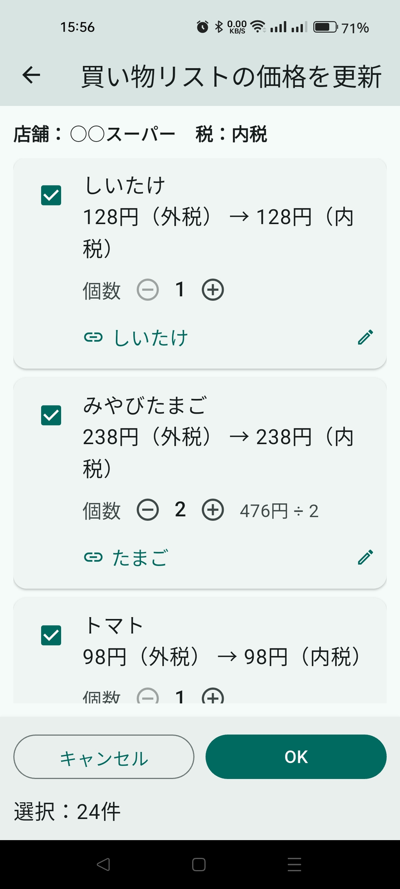
③ 過去の価格を見る
③ Look at past prices
③ 과거 가격 보기
③ 查看过去的价格
③ 查看過去的價格
- 買い物のホームの「過去の価格を見る」を押して、品名を入れます。最後に買った値段、いちばん安かった値段、お店ごとの値段、値段の動き（グラフ）が見られます。
- Press "View past prices" on the Shopping home screen and type an item name. You can see the last price, the lowest price, prices by store and a price graph.
- 쇼핑 홈의 "과거 가격 보기"를 누르고 품명을 입력합니다. 마지막으로 산 가격, 가장 싼 가격, 매장별 가격, 가격 변화(그래프)를 볼 수 있습니다.
- 点击购物主页的“查看过去的价格”，输入品名。可以看到最后一次的价格、最便宜的价格、各店铺的价格和价格变化（图表）。
- 點選購物主頁的「查看過去的價格」，輸入品名。可以看到最後一次的價格、最便宜的價格、各店家的價格和價格變化（圖表）。
- 値段が入っていると、買い物メモの品名のあとに「198円（外税）」のように出ます。前回の値段を見ながら買い物できます。
- When a price is saved, it appears after the item name on the shopping memo (for example "198, tax excluded"), so you can shop while looking at the last price.
- 가격이 들어 있으면 쇼핑 메모의 품명 뒤에 "198(세금 별도)"처럼 표시됩니다. 지난번 가격을 보면서 쇼핑할 수 있습니다.
- 如果已有价格，购物备忘的品名后面会显示“198（不含税）”这样的内容，可以对照上次的价格购物。
- 如果已有價格，購物備忘的品名後面會顯示「198（不含稅）」這樣的內容，可以對照上次的價格購物。
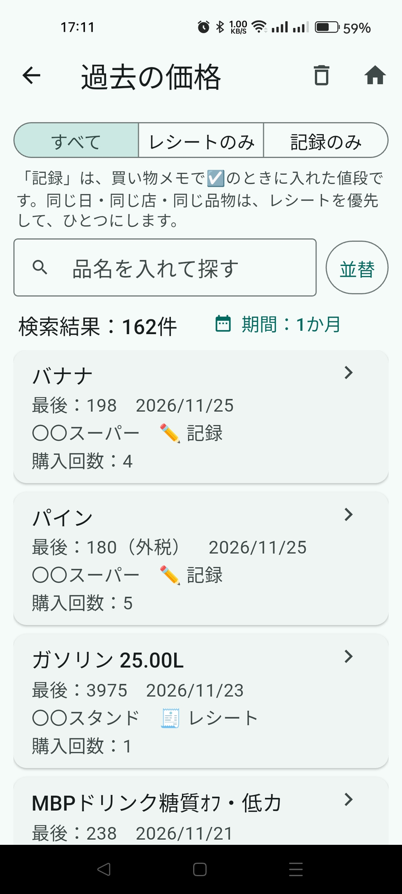
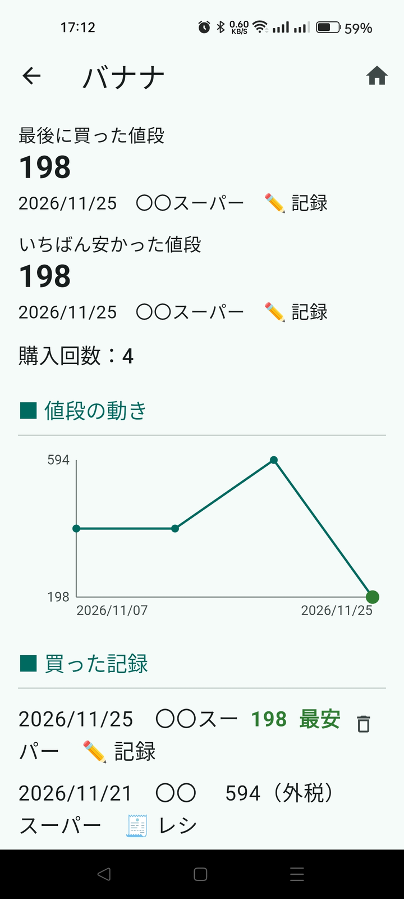
✨ もっと便利に使う方法
✨ Getting more out of the app
✨ 더 편리하게 사용하는 방법
✨ 更方便的使用方法
✨ 更方便的使用方法
知っていると便利な機能です。全部を覚える必要はありません。必要になったときに、開いて見てください。
These are handy features. You do not need to remember them all. Open the one you need, when you need it.
알아 두면 편리한 기능입니다. 전부 외울 필요는 없습니다. 필요할 때 열어서 보세요.
这些是知道了会很方便的功能，不需要全部记住。需要时再点开看看即可。
這些是知道了會很方便的功能，不需要全部記住。需要時再點開看看即可。
🛍️ 買い物メモを、もっと便利に🛍️ Shopping memo: handy extras🛍️ 쇼핑 메모를 더 편리하게🛍️ 让购物备忘更方便🛍️ 讓購物備忘更方便
- 売り場の順に並べ替えるこだわりたい方は、いつも自分が廻る売り場順にリストを並べ替えて、記憶させることもできます。品物の右の「≡」を押したまま動かし、右上「⋮」の「並び順を記憶」を押します。次からは、「並び順の呼出」で戻せます。
- Arrange the list in the order you walk around the storeIf you like things your own way, you can rearrange the list into the order you always walk around the store and have the app remember it. Hold the "≡" at the right of an item and move it, then press "Remember sort order" in the "⋮" menu at the top right. Next time, press "Recall order" to bring it back.
- 매장을 도는 순서로 정렬하기취향대로 하고 싶은 분은, 늘 도는 매장 코너 순서로 목록을 정렬해 기억시킬 수도 있습니다. 품목 오른쪽의 "≡"를 누른 채 움직이고, 오른쪽 위 "⋮"의 "정렬 순서 기억"을 누릅니다. 다음부터는 "순서 불러오기"로 되돌릴 수 있습니다.
- 按逛店的顺序排列讲究的朋友，可以把清单按自己平时逛店的顺序重新排列，并让应用记住。按住物品右侧的“≡”移动，再点击右上角“⋮”中的“记住排列顺序”。下次点击“恢复排列顺序”即可还原。
- 依逛店的順序排列講究的朋友，可以把清單依自己平時逛店的順序重新排列，並讓應用程式記住。按住物品右側的「≡」移動，再點選右上角「⋮」中的「記住排列順序」。下次點選「恢復排列順序」即可還原。
- カテゴリーで絞るお店の名前の下のカテゴリーのボタンを押すと、その品物だけが出ます。
- Narrow down by categoryPress a category button under the store name to show only those items.
- 카테고리로 좁혀 보기매장 이름 아래의 카테고리 버튼을 누르면 해당 품목만 표시됩니다.
- 按分类筛选点击店铺名称下方的分类按钮，就只显示该分类的物品。
- 依分類篩選點選店家名稱下方的分類按鈕，就只顯示該分類的物品。
- カテゴリーを決める品物を「果物・野菜・肉…」に分けておくと、最初の並びが売り場の順になります。ホーム右上の「⋮」の「カテゴリー」で、お店ごとに決めます。
- Set up categoriesIf you sort items into groups such as fruit, vegetables and meat, the memo starts out in store-aisle order. Set them for each store from "Categories" in the "⋮" menu at the top right of the home screen.
- 카테고리 정하기품목을 "과일·채소·고기…"로 나눠 두면 처음 정렬이 매장 코너 순서가 됩니다. 홈 오른쪽 위 "⋮"의 "카테고리"에서 매장별로 정합니다.
- 设置分类把物品分成“水果・蔬菜・肉类……”，备忘一开始就会按卖场顺序排列。在主页右上角“⋮”的“分类”中，按店铺设置。
- 設定分類把物品分成「水果・蔬菜・肉類……」，備忘一開始就會依賣場順序排列。在主頁右上角「⋮」的「分類」中，依店家設定。
- 店舗なし（全店舗まとめ）全部のお店の品物を、1枚のメモにまとめられます。
- All stores in one memoCombine the items of every store into a single memo.
- 전체 매장을 한 장으로모든 매장의 품목을 한 장의 메모로 합칠 수 있습니다.
- 全部店铺合成一张可以把所有店铺的物品合并成一张备忘。
- 全部店家合成一張可以把所有店家的物品合併成一張備忘。
- 🛒で今日のメモをすぐ開くホームの🛒アイコンを押すと、今日の買い物メモが開きます。
- Open today's memo with 🛒Press the 🛒 icon on the home screen to open today's shopping memo.
- 🛒로 오늘의 메모 바로 열기홈의 🛒 아이콘을 누르면 오늘의 쇼핑 메모가 열립니다.
- 用🛒立刻打开今天的备忘点击主页的🛒图标，就会打开今天的购物备忘。
- 用🛒立刻開啟今天的備忘點選主頁的🛒圖示，就會開啟今天的購物備忘。
- 使わない品物をかくす品物の詳細画面で「非表示」に☑を付けると、一覧とメモから隠れます。ホーム右上の「⋮」の「非表示リスト」で、まとめて戻せます。
- Hide items you do not useTick "Hide" on an item's detail screen and it disappears from the list and the memo. You can bring items back all at once from "Hidden List" in the "⋮" menu at the top right.
- 쓰지 않는 품목 숨기기품목 상세 화면에서 "숨기기"에 ☑를 하면 목록과 메모에서 사라집니다. 홈 오른쪽 위 "⋮"의 "숨김 목록"에서 한꺼번에 되돌릴 수 있습니다.
- 隐藏不用的物品在物品详情画面勾选“隐藏”，它就会从清单和备忘中消失。可在主页右上角“⋮”的“隐藏列表”中一次性恢复。
- 隱藏不用的物品在物品詳情畫面勾選「隱藏」，它就會從清單和備忘中消失。可在主頁右上角「⋮」的「隱藏清單」中一次性恢復。
- 買い物が終わったらいちばん下の「全部を取消し」を押します。☑・線・追加メモが消えて、ホームに戻ります（記憶した並び順は残ります）。
- When you finish shoppingPress "Cancel All" at the bottom. The ticks, strike-throughs and additional memos are cleared and you return to the home screen (the remembered order stays).
- 쇼핑이 끝나면맨 아래의 "모두 취소"를 누릅니다. ☑·취소선·추가 메모가 지워지고 홈으로 돌아갑니다(기억한 정렬 순서는 남습니다).
- 购物结束后点击最下方的“全部取消”。勾选、划线和附加备注都会清除并回到主页（记住的排列顺序会保留）。
- 購物結束後點選最下方的「全部取消」。勾選、劃線和附加備註都會清除並回到主頁（記住的排列順序會保留）。
- ひらがなで探せる検索窓にひらがな・カタカナで入れると、漢字で登録した品物も見つかります。
- Search in kanaTyping in hiragana or katakana also finds items that were registered with kanji.
- 히라가나로 찾기검색창에 히라가나·가타카나로 입력하면 한자로 등록한 품목도 찾을 수 있습니다.
- 用假名搜索在搜索框中输入平假名或片假名，也能找到用汉字登记的物品。
- 用假名搜尋在搜尋框中輸入平假名或片假名，也能找到用漢字登錄的物品。
- お店を増やすホーム右上の「⋮」の「基本素材のインポート」で、あとからお店を足せます。
- Add more storesUse "Import Basic Materials" in the "⋮" menu at the top right of the home screen to add stores later.
- 매장 추가하기홈 오른쪽 위 "⋮"의 "기본 식재료 가져오기"로 나중에 매장을 추가할 수 있습니다.
- 增加店铺在主页右上角“⋮”的“导入基本食材”中，可以随时增加店铺。
- 增加店家在主頁右上角「⋮」的「匯入基本食材」中，可以隨時增加店家。
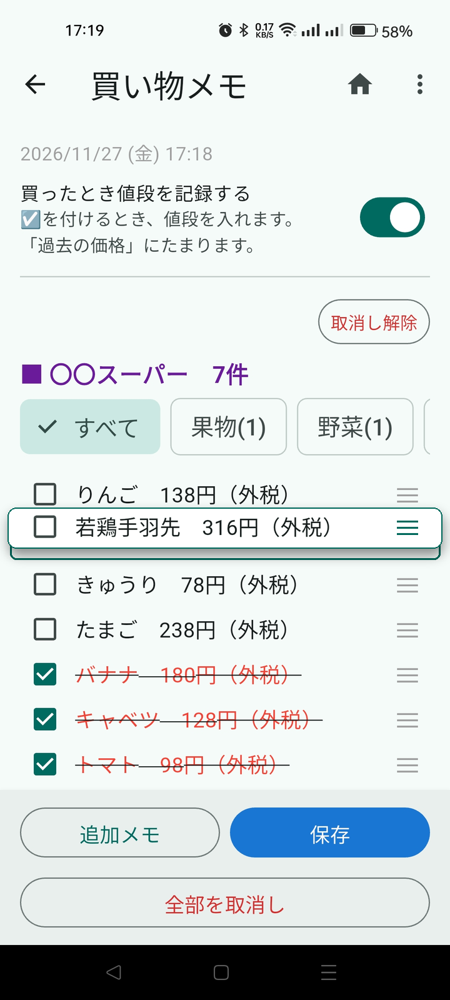
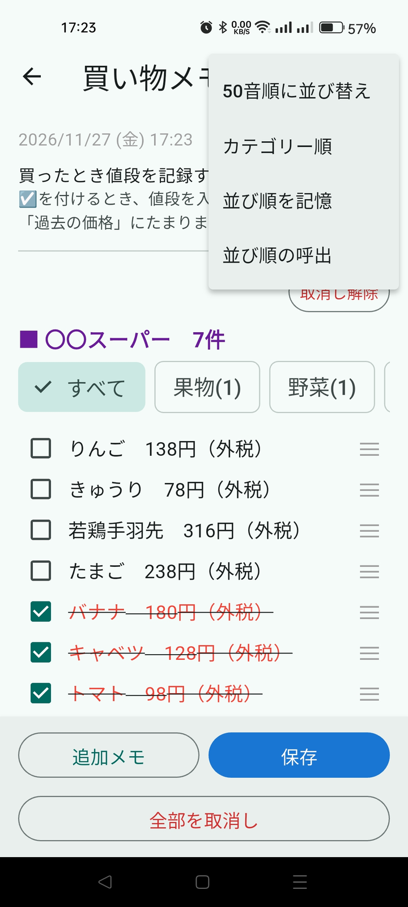
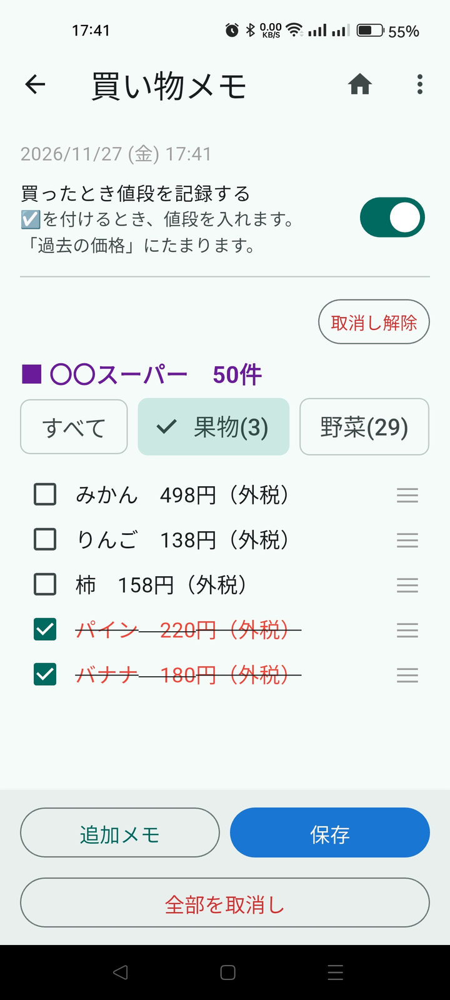
📒 家計簿📒 Budget📒 가계부📒 记账📒 記帳
- レシートの登録・集計・編集レシートを撮って、期間を決めて集計できます。AIで読み取るには、APIキーが要ります。
- Register, summarize and edit receiptsTake photos of receipts and summarize them for any period. To read them with AI you need an API key.
- 영수증 등록·집계·편집영수증을 촬영하고 기간을 정해 집계할 수 있습니다. AI로 읽으려면 API 키가 필요합니다.
- 收据的登记・汇总・编辑拍摄收据，并按期间汇总。要用AI读取，需要API密钥。
- 收據的登錄・彙總・編輯拍攝收據，並依期間彙總。要用AI讀取，需要API金鑰。
- 家計簿の入力・集計・編集支払先・日付・種別・金額を、1件ずつ入れます。レシートから引き継ぐこともできます。
- Enter, summarize and edit the budgetEnter the payee, date, type and amount one by one. You can also carry data over from a receipt.
- 가계부 입력·집계·편집지불처·날짜·종류·금액을 한 건씩 입력합니다. 영수증에서 이어받을 수도 있습니다.
- 记账的输入・汇总・编辑逐笔输入付款对象、日期、类别和金额。也可以从收据带入。
- 記帳的輸入・彙總・編輯逐筆輸入付款對象、日期、類別和金額。也可以從收據帶入。
- 収入も記録する⚙設定の「家計簿のモード」で「多機能モード」を選ぶと、収入も記録できます。
- Record income tooChoose "Full mode" under "Budget mode" in ⚙ Settings to record income as well.
- 수입도 기록하기⚙설정의 "가계부 모드"에서 "다기능 모드"를 고르면 수입도 기록할 수 있습니다.
- 也记录收入在⚙设置的“记账模式”中选择“多功能模式”，就可以记录收入。
- 也記錄收入在⚙設定的「記帳模式」中選擇「多功能模式」，就可以記錄收入。
- CSV・PDFで出す家計簿タブで⚙設定を開き、「データ出力」を押します。
- Export as CSV or PDFOpen ⚙ Settings in the Budget tab and press "Data Export".
- CSV·PDF로 내보내기가계부 탭에서 ⚙설정을 열고 "데이터 내보내기"를 누릅니다.
- 导出为CSV・PDF在记账标签页打开⚙设置，点击“数据导出”。
- 匯出為CSV・PDF在記帳分頁開啟⚙設定，點選「資料導出」。
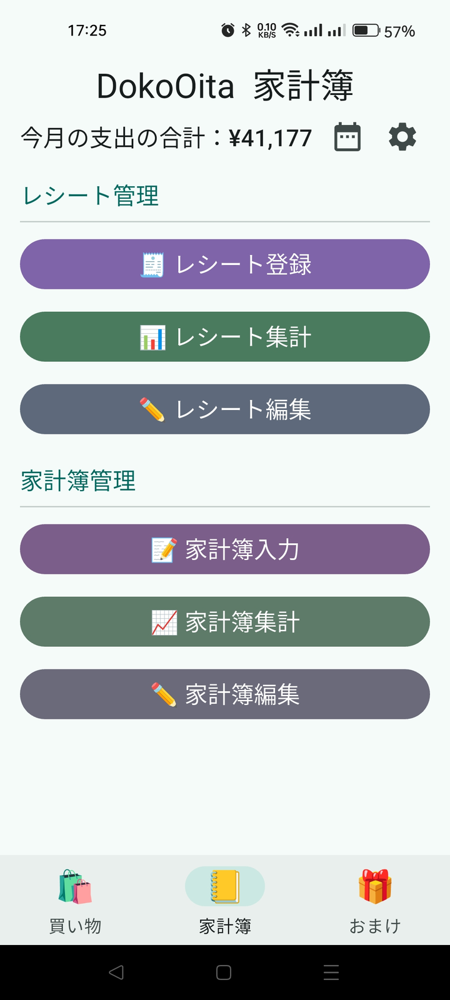
🎁 おまけ（置き場所・終活）🎁 Extras (Places and End-of-life)🎁 부가 (장소·인생 정리)🎁 附加（地点・人生整理）🎁 附加（地點・人生整理）
- 置き場所しまい込んだ物の場所を、写真や動画で記録します。上の検索欄で探せます。
- PlacesRecord where you put things away, with photos or videos. Find them with the search box at the top.
- 장소넣어 둔 물건의 위치를 사진이나 동영상으로 기록합니다. 위쪽 검색창으로 찾을 수 있습니다.
- 地点用照片或视频记录收起来的东西放在哪里。可用上方的搜索框查找。
- 地點用照片或影片記錄收起來的東西放在哪裡。可用上方的搜尋框查找。
- 終活大切な物や、家族に伝えたいことを記録します。使い方は、置き場所と同じです。
- End-of-lifeRecord important belongings and messages for your family. It works the same way as Places.
- 인생 정리소중한 물건이나 가족에게 전하고 싶은 말을 기록합니다. 사용법은 장소와 같습니다.
- 人生整理记录重要的物品和想对家人说的话。用法与“地点”相同。
- 人生整理記錄重要的物品和想對家人說的話。用法與「地點」相同。
- 登録のしかた📷カメラか🖼️ギャラリーで写真を選び、各項目を入れて「完了」を押します。写真に文字や丸印を入れたいときは「画像編集」を使います。
- How to registerChoose a photo with 📷 Camera or 🖼️ Gallery, fill in the fields and press "Done". To add text or circles to the photo, use "Edit image".
- 등록 방법📷카메라나 🖼️갤러리로 사진을 고르고, 각 항목을 입력한 뒤 "완료"를 누릅니다. 사진에 글자나 동그라미를 넣고 싶으면 "이미지 편집"을 사용합니다.
- 登记方法用📷拍照或🖼️相册选择照片，填写各项后点击“完成”。想在照片上加文字或圆圈时，请使用“编辑图片”。
- 登錄方法用📷拍照或🖼️相簿選擇照片，填寫各項後點選「完成」。想在照片上加文字或圓圈時，請使用「編輯圖片」。
- 送る詳細画面の「共有」で、写真と登録内容を、LINEやメールで送れます。
- SendUse "Share" on the detail screen to send the photo and its details by LINE or e-mail.
- 보내기상세 화면의 "공유"로 사진과 등록 내용을 LINE이나 이메일로 보낼 수 있습니다.
- 发送在详情画面点击“分享”，可通过LINE或电子邮件发送照片和登记内容。
- 傳送在詳情畫面點選「分享」，可透過LINE或電子郵件傳送照片和登錄內容。
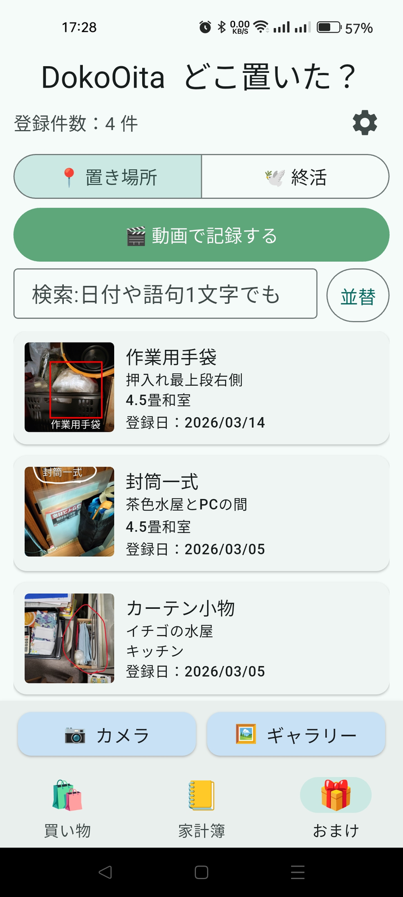
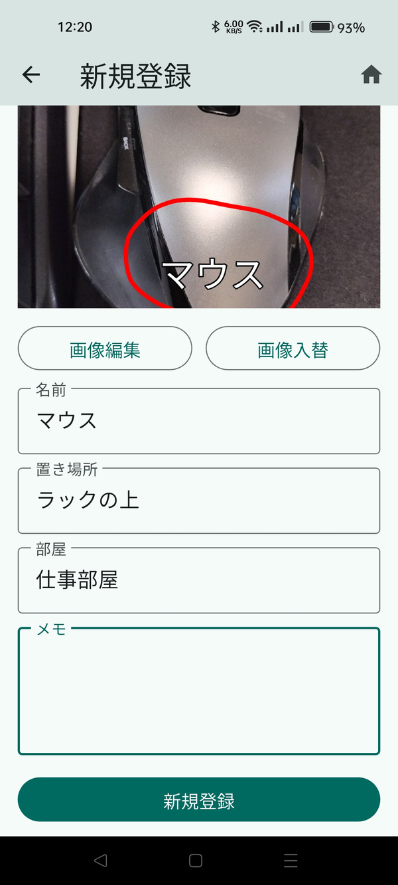
⚙ 設定とバックアップ⚙ Settings and backup⚙ 설정과 백업⚙ 设置与备份⚙ 設定與備份
- 画面のつくり下の3つのタブ（買い物・家計簿・おまけ）で切り替えます。⚙設定は、開け閉めできる5つのグループに分かれています。
- How the screens are laid outSwitch with the three tabs at the bottom (Shopping, Budget, Extras). ⚙ Settings is divided into five groups that you can open and close.
- 화면 구성아래의 3개 탭(쇼핑·가계부·부가)으로 전환합니다. ⚙설정은 열고 닫을 수 있는 5개 그룹으로 나뉘어 있습니다.
- 画面的构成用下方的3个标签页（购物・记账・附加）切换。⚙设置分为可展开收起的5个组。
- 畫面的構成用下方的3個分頁（購物・記帳・附加）切換。⚙設定分為可展開收合的5個群組。
- バックアップデータは、お使いのスマホの中にだけあります。ときどき、⚙設定の「データ管理」の「ZIPエクスポート（画像込み）」で保存してください。新しいスマホでは「ZIPインポート」で戻せます（並び順やカテゴリーも引き継がれます）。
- BackupYour data exists only inside your phone. From time to time, save it with "ZIP Export (with images)" under "Data Management" in ⚙ Settings. On a new phone, restore it with "ZIP Import" (the sort order and categories are carried over too).
- 백업데이터는 사용 중인 스마트폰 안에만 있습니다. 가끔 ⚙설정의 "데이터 관리"에서 "ZIP 내보내기 (이미지 포함)"로 저장해 주세요. 새 스마트폰에서는 "ZIP 가져오기"로 되돌릴 수 있습니다(정렬 순서와 카테고리도 이어집니다).
- 备份数据只保存在您的手机里。请不时在⚙设置的“数据管理”中用“ZIP导出（含图片）”保存。换新手机后，用“ZIP导入”即可恢复（排列顺序和分类也会一并带过去）。
- 備份資料只保存在您的手機裡。請不時在⚙設定的「資料管理」中用「ZIP匯出（含圖片）」儲存。換新手機後，用「ZIP匯入」即可恢復（排列順序和分類也會一併帶過去）。
- 言葉をまとめて直す⚙設定の「項目一括編集」で、登録した言葉を、まとめて直せます。
- Fix words all at onceUse "Bulk Edit" in ⚙ Settings to correct registered words all at once.
- 말을 한꺼번에 고치기⚙설정의 "항목 일괄 편집"으로 등록한 말을 한꺼번에 고칠 수 있습니다.
- 批量修改文字在⚙设置的“批量编辑”中，可以一次性修改已登记的文字。
- 批次修改文字在⚙設定的「批次編輯」中，可以一次性修改已登錄的文字。
- 保存・削除「保存」と「削除」も、⚙設定の「データ管理」にあります。
- Save and delete"Save" and "Delete" are also under "Data Management" in ⚙ Settings.
- 저장·삭제"저장"과 "삭제"도 ⚙설정의 "데이터 관리"에 있습니다.
- 保存・删除“保存”和“删除”也在⚙设置的“数据管理”中。
- 儲存・刪除「儲存」和「刪除」也在⚙設定的「資料管理」中。
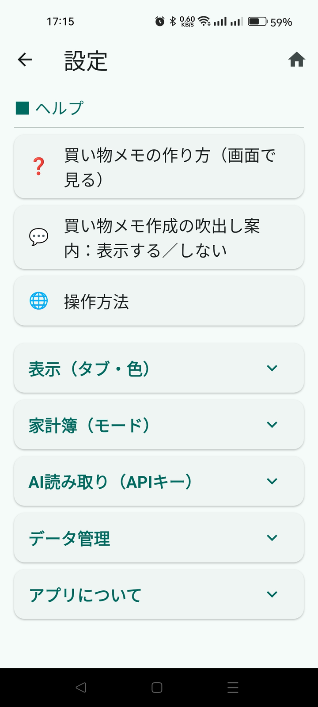
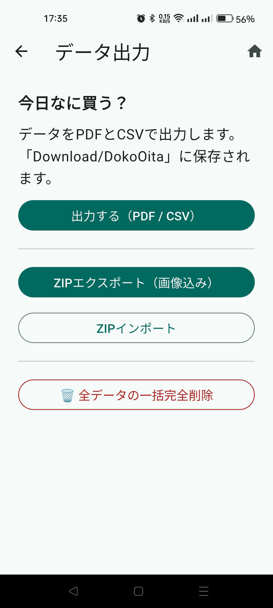
🔑 レシートをAIで読み取るには（APIキー）
🔑 Reading receipts with AI (API key)
🔑 AI로 영수증을 읽으려면 (API 키)
🔑 用AI读取收据（API密钥）
🔑 用AI讀取收據（API金鑰）
AIでレシートを読み取る機能は、使いたい人だけが使います。ご自分で用意した「APIキー」（Anthropic）が要ります。取り方を、動く画面でご案内します。使わない方は、何もしなくて大丈夫です。
The AI receipt-reading feature is only for people who want it. You need your own "API key" (Anthropic). A step-by-step moving guide shows how to get one. If you do not use it, you do not need to do anything.
AI 영수증 읽기 기능은 쓰고 싶은 분만 사용합니다. 직접 준비한 "API 키"(Anthropic)가 필요합니다. 받는 방법을 움직이는 화면으로 안내합니다. 사용하지 않는 분은 아무것도 하지 않아도 됩니다.
AI读取收据的功能只有想用的人才使用。需要您自己准备的“API密钥”（Anthropic）。获取方法用动态画面为您介绍。不使用的朋友什么都不用做。
AI讀取收據的功能只有想用的人才使用。需要您自己準備的「API金鑰」（Anthropic）。取得方法用動態畫面為您介紹。不使用的朋友什麼都不用做。
🔑 APIキーの取り方を見る（動く案内）🔑 See how to get an API key (moving guide)🔑 API 키 받는 방법 보기 (움직이는 안내)🔑 查看获取API密钥的方法（动态指引）🔑 查看取得API金鑰的方法（動態指引）